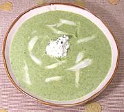

|
Asparagus SoupAnywhere | ||||
| Makes: Effort: Sched: DoAhead: |
- - Don't No |
Asparagus soups are pretty much always disappointing. Asparagus just isn't good for that, and trying is just a waste of asparagus, time and other ingredients. | |||
|
The flavor of Asparagus just isn't intense enough to base a soup on, and it tends to turn an unatractive gray green color when cooked. The one in the photo tries very hard, but has to use spinach to get some flavor and decent color, and goat cheese for interest - resulting in a passable spinach soup and a pound of asparagus wasted. Where asparagus does work in soup is when you're making a light vegetable soup or something of that sort. Cut short pieces of asparagus, toss them in as the last item and give the soup 5 to 7 more minutes of cooking. Asparagus in soup works - asparagus soup doesn't. Updates, 2020The above was writen back in 2008, after considerable disappointment. Since then, following a number of trials, we have found a couple Asparagus Soups that did not disappoint - appropriately used as light soup courses.
|